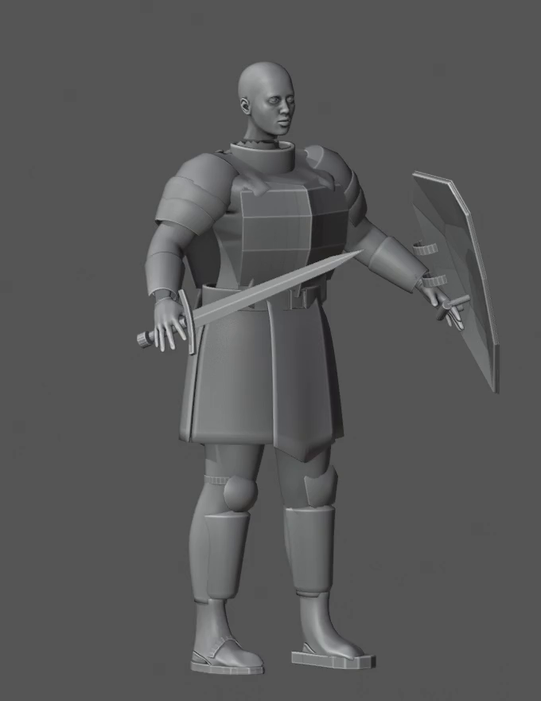
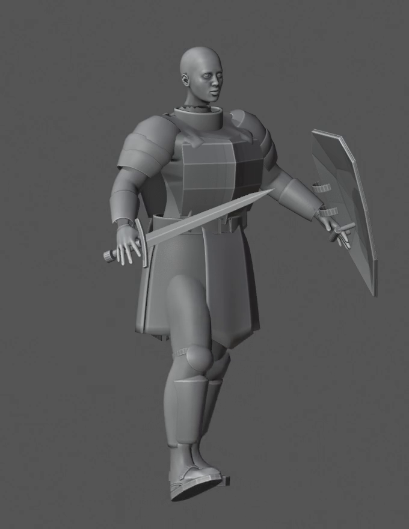
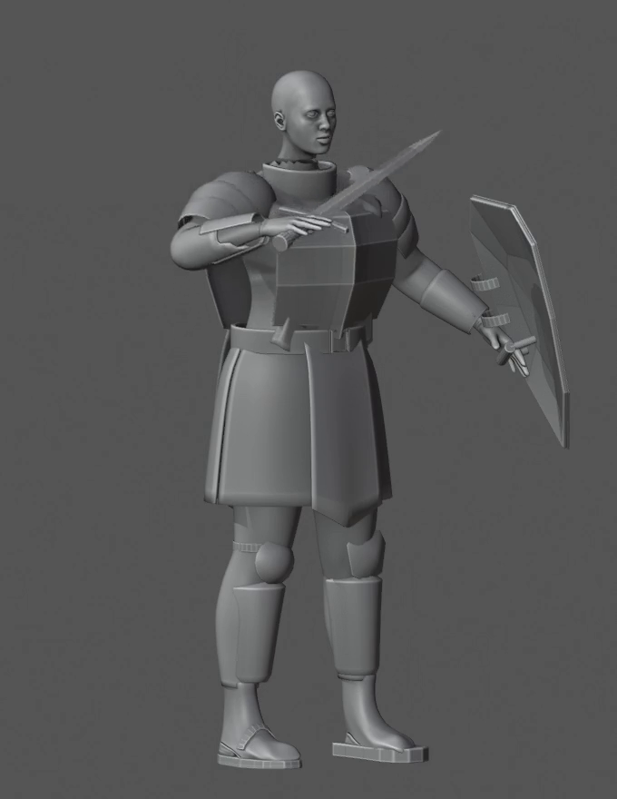
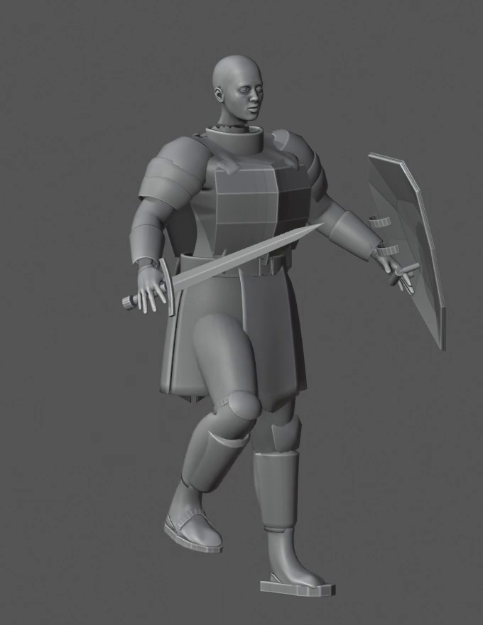
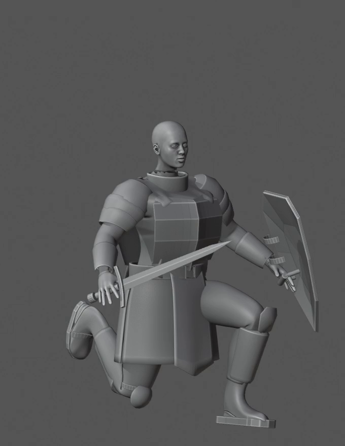
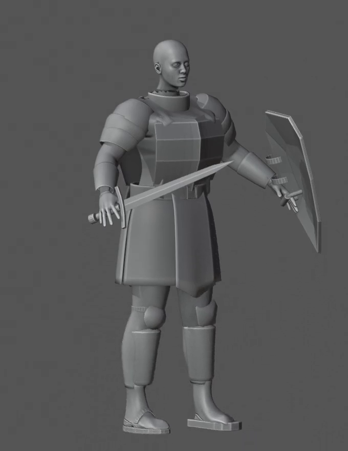
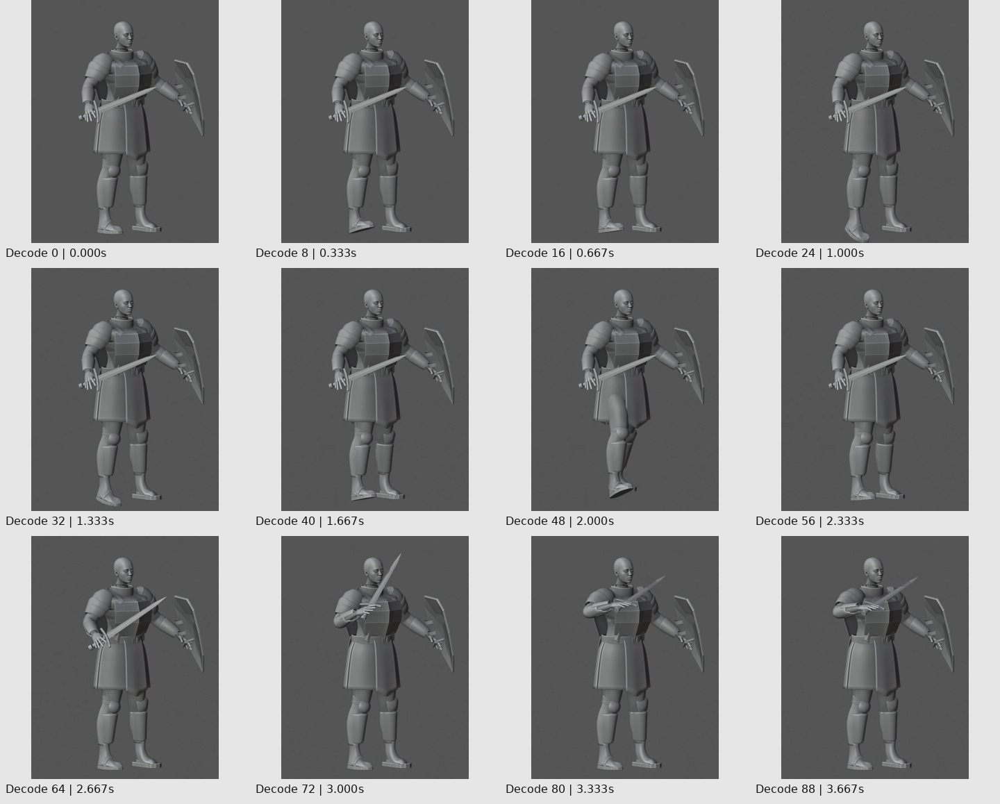
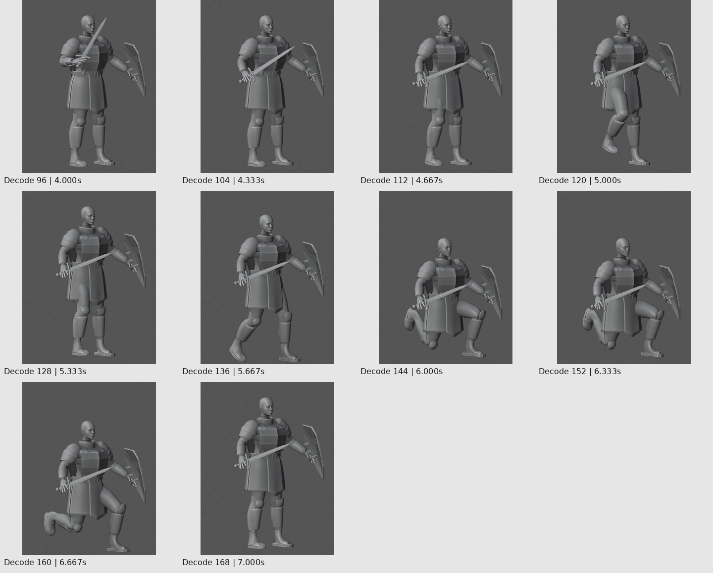

169 decoded frames at 24 FPS, 680×880. Twenty-two time samples were visually inspected for this handoff. No new modeling or Blender rendering was performed.
Indices are zero-based video frames. Blender action-frame mapping must be verified locally. These images cannot measure sub-millimetre contacts.







